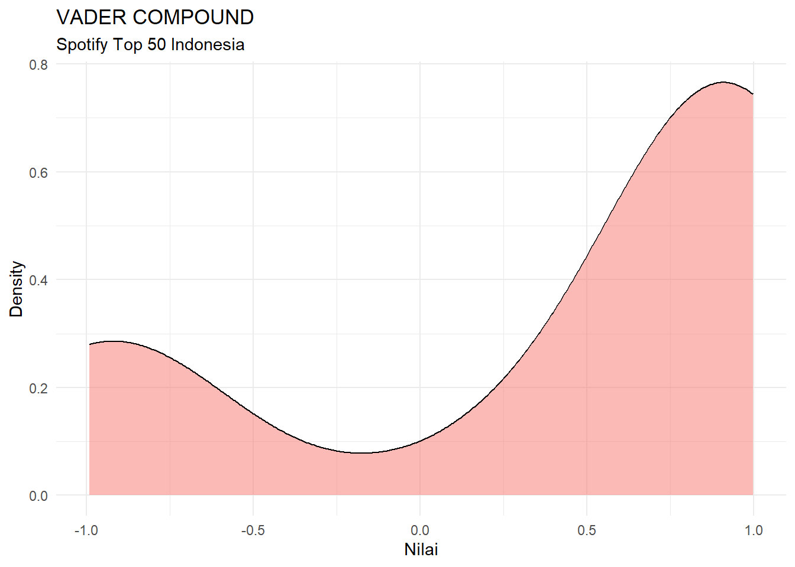

Jawaban singkatnya: iya. Pertanyaan dari judul di atas berangkat dari salah satu debat kusir di Twitter yang berujung pada pertikaian para penggemar penyanyi pop vs. penggemar lagu Indie. Banyak dari mereka yang mempertanyakan:
“Kenapa sih orang kita suka dengerin lagu gjls ajg
“Apa ada yang salah dengan selera masyarakat?”
“Ini semua pasti salah kaum kapitalis yang memberikan upah murah pada masyarakat kecil
“Kita butuh Harmoko untuk jadi Menteri Penerangan lagi!“
dsb.
Saya sebagai orang yang menghabiskan waktu 40 jam dalam sehari untuk dengerin lagu, tentunya tertantang untuk menjawab pertanyaan semacam ini. Kebetulan, saya pernah membuat analisis riwayat pemutaran Spotify saya sejak pertama pakai Spotify akhir tahun 2017 sampai awal 2023 kemarin (yang cuma jadi draft doang di Tableau). Dengan pengalaman tersebut, saya cukup kompeten lah dalam melakukan analisis yang sama terhadap selera musik kebanyakan orang Indonesia.
Pembahasan ini akan menganalisis lagu yang disukai oleh orang Indonesia berdasarkan rincian fitur audio yang diambil dari Spotify API, dan analisis lirik yang diambil dari Musixmatch. Mengapa dua? Jika kalian memperhatikan dengan seksama lagu yang kalian dengar serta liriknya, akan ditemukan beberapa lagu yang bernada ceria tetapi liriknya sedih, begitu pula sebaliknya. Kedua data tersebut saya ambil pada Sabtu, 27 Mei 2023.
Analisis Fitur Audio Spotify
Selain menyediakan musik, Spotify juga berperan dalam membuat daftar putar (playlist) yang beberapa diantaranya diperbaharui sesuai selera masyarakat. Spotify juga menyusun chart, yakni urutan lagu yang sedang digemari oleh masyarakat yang dibuat berdasarkan negara-negaranya. Playlist yang digunakan dalam analisis kali ini adalah Top 50 - Indonesia, yakni chart playlist yang berisikan 50 lagu yang paling sering diputar di Indonesia yang diperbaharui setiap hari.
Saya mengambil sebanyak empat kolom audio_features yang disediakan Spotify API sebagai parameter angka yang dijadikan pengukuran mood dalam masing-masing lagu yang ada dalam playlist, yakni:
Valence, mengacu pada tingkat positivitas atau negativitas emosional dalam sebuah lagu. Nilai valence berkisar antara 0,0 hingga 1,0, di mana 0,0 mewakili lagu yang sangat negatif atau sedih, sementara 1,0 mewakili lagu yang sangat positif atau bahagia. Misalnya, lagu-lagu pop yang ceria cenderung memiliki nilai valence yang tinggi.Danceability, mengindikasikan seberapa cocok sebuah lagu untuk berdansa. Nilai danceability berkisar antara 0,0 hingga 1,0, di mana 0,0 menunjukkan lagu yang sulit untuk berdansa, sementara 1,0 menunjukkan lagu yang sangat cocok untuk berdansa. Faktor seperti ritme, stabilitas tempo, kekuatan irama, dan jenis instrumen dapat mempengaruhi nilai danceability suatu lagu.Acousticness, adalah ukuran seberapa akustik sebuah lagu atau sejauh mana suara yang dihasilkan oleh instrumen musik secara alami, tanpa pengolahan elektronik atau manipulasi. Nilai acousticness berkisar antara 0,0 hingga 1,0, di mana 0,0 menunjukkan lagu yang sangat tidak akustik (lebih cenderung menggunakan instrumen elektronik), sementara 1,0 menunjukkan lagu yang sepenuhnya akustik (tidak ada instrumen elektronik).Energy, menggambarkan tingkat keaktifan dan intensitas suatu lagu. Nilai energy berkisar antara 0,0 hingga 1,0, di mana 0,0 menunjukkan lagu yang sangat tenang dan lembut, sementara 1,0 menunjukkan lagu yang sangat energik dan bersemangat. Faktor seperti kecepatan, volume, dan intensitas instrumen dapat mempengaruhi nilai energy sebuah lagu.
Berikut adalah tabel Audio Features dari 50 lagu dalam playlist Top 50 - Indonesia:
Lihat Kode
audio_features <- read_csv("datasets/audio_features3.csv")
songTable <- reactable(audio_features%>%select(numCharts,image,artist,track,genre,valence,danceability, acousticness,energy,mood)%>%arrange(numCharts),
searchable = TRUE,
sortable = TRUE,
theme = reactableTheme(
cellStyle = list(display='flex',flexDirection='column',justifyContent='center'),
style = list(fontFamily='Roboto'),
backgroundColor = "#ffffff",
color = "#000000",
borderColor = "#303030"
),
columns = list(
numCharts = colDef(name = "No.", width = 50),
image = colDef(name = "", cell = embed_img(height=50,width=50)),
artist = colDef(name = 'ARTIST', html = TRUE, cell = function(value,index) {
sprintf('<a style=text-decoration: none; color: #3dceee; href="%s" target="_blank">%s</a>', audio_features$artist_url[index], value)
}),
track = colDef(name = 'TRACK', html = TRUE, cell = function(value,index) {
sprintf('<a style=text-decoration: none; color: #3dceee; href="%s" target="_blank">%s</a>', audio_features$song_url[index], value)
}),
genre = colDef(name = 'GENRE', align = 'center', width = 80),
valence = colDef(name = "VALENCE", style = color_scales(audio_features), align = "center", format = colFormat(digits = 2)),
danceability = colDef(name = "DANCEABILITY", style = color_scales(audio_features), align = "center", format = colFormat(digits = 2)),
acousticness = colDef(name = "ACOUSTICNESS", style = color_scales(audio_features), align = "center", format = colFormat(digits = 2)),
energy = colDef(name = "ENERGY", style = color_scales(audio_features), align = "center", format = colFormat(digits = 2)),
mood = colDef(name = "MOOD", align = 'center', width = 80)
),
compact = TRUE,
class = "spotify-tbl")
# Memunculkan tabel
div(class = "spotify-table",
div(class = "spotify-header",
h2(class = "spotify-title", "Bagaimana Caramu Menggambarkan Lagu Kesukaanmu"),
"Fitur-fitur yang ada dalam top chart 50 Spotify Indonesia"),
songTable
)Bagaimana Caramu Menggambarkan Lagu Kesukaanmu
Fitur-fitur yang ada dalam top chart 50 Spotify IndonesiaJika kalian geser tabelnya ke kanan, kalian akan melihat bahwa ada kolom Mood yang terbagi menjadi empat value: ‘Sad’, ‘Energetic’, ‘Happy’, dan ‘Calm’. Keempat value tersebut dihasilkan dari proses klasifikasi menggunakan K-Nearest-Neighbor berdasarkan empat parameter dalam audio features di atas. Untuk penjelasan lebih lengkap, silahkan baca artikel yang bagus banget ini: Predicting the Music Mood of a Song with Deep Learning. by Cristóbal Veas.
Lihat Kode
audio_features %>%
count(mood) %>%
arrange(desc(n))# A tibble: 3 × 2
mood n
<chr> <int>
1 ['Sad'] 34
2 ['Energetic'] 8
3 ['Happy'] 8Nah, berdasarkan tabel di atas, ditemukan bahwa ternyata dalam playlist Top 50 - Indonesia, 34 diantaranya adalah lagu sedih, lalu 8 trek lagu bersemangat, dan 8 trek lagu bahagia. Di sini sudah terlihat bahwa lagu sedih bahkan memiliki populasi dua kali lebih besar daripada gabungan antara lagu bahagia dan berenergi digabung!
Tetapi metode ini punya kekurangan, yaitu ia hanya menilai mood sebuah lagu berdasarkan suaranya. Hal ini bisa dilihat bahwa lagu Last Child yang berjudul Duka, justru diklasifikasikan sebagai lagu bahagia oleh perhitungan di atas. Walau memang jika kalian mendengarkan lagunya tanpa melihat liriknya, kalian akan mengetahui bahwa lagu ini dimainkan dengan semangat. Maka dari itu, langkah selanjutnya adalah menganalisis mood lagu berdasarkan liriknya.
Lihat Kode
audio_features %>%
hchart('scatter',
hcaes(x = valence,
y = energy,
group = genre),
tooltip = list(pointFormat = "{point.artist} - {point.track} <br> valence: {point.valence} <br> energy: {point.energy}")) %>%
hc_title(text = "Energy vs. Valence") %>%
hc_subtitle(text = "Semakin ke kanan lagu semakin ceria <br> Semakin ke atas lagu semakin bersemangat") %>%
hc_credits(enabled = TRUE, text = "http://alifdwt.github.com") %>%
hc_add_theme(hc_theme_google())Analisis Lirik
Selanjutnya, saya melakukan analisis lirik. Ada berbagai macam cara untuk mendapatkan lirik lagu menggunakan Python, tetapi yang paling banyak dipakai adalah dengan mengekstrak lirik dari Genius API. Tetapi sayangnya, karena lagu dalam playlist ini sebagian besar berbahasa Indonesia, dan database lagu Indonesia di Genius masih belum bisa memenuhi seluruh lagu yang ada dalam playlist, membuat saya harus mencari cara lain.
Akhirnya, saya melihat Musixmatch, penyedia lirik lagu yang juga menyediakan lirik untuk Spotify (yang biasa kalian lihat di bawah layar). Namun, Musixmatch API hanya menyediakan 30% dari lirik lagu untuk pengguna free. Maka dari itu, saya menggunakan package dari pihak ketiga, yakni: Syrics. Dengan bantuan dari Ahura Mazda, dan Chat-GPT, akhirnya saya menemukan cara untuk mendapatkan lirik dari package tersebut.
NRCLex
Dalam analisis lirik ini, saya menggunakan NRCLex, sebuah package berlatarbelakang Natural Language Processing (NLP) yang dapat mengenali enam ekspresi emosi dari teks, yakni: fear (takut), anger (marah), anticipation (waspada), trust (percaya), surprise (terkejut), sadness (kesedihan), disgust (jijik), dan joy (bahagia). Selain itu, NRCLex juga dapat mengenali sentimen positif dan negatif dalam teks. Canggih kan?
Lihat Kode
data_lyrics <- read_csv("datasets/data_lyrics.csv")
lyricsTable <- reactable(data_lyrics%>%select(numCharts,image,artist,track,language,emot_trust,emot_joy,emot_surprise,emot_anger,emot_disgust,emot_fear)%>%arrange(numCharts),
searchable = TRUE,
sortable = TRUE,
theme = reactableTheme(
cellStyle = list(display='flex',flexDirection='column',justifyContent='center'),
style = list(fontFamily='Roboto'),
backgroundColor = "#ffffff",
color = "#000000",
borderColor = "#303030"
),
columns = list(
numCharts = colDef(name = "No", width = 50),
image = colDef(name = "", cell = embed_img(height=50,width=50)),
artist = colDef(name = 'ARTIST', html = TRUE, cell = function(value,index) {
sprintf('<a style=text-decoration: none; color: #3dceee; href="%s" target="_blank">%s</a>', data_lyrics$artist_url[index], value)
}),
track = colDef(name = 'TRACK', html = TRUE, cell = function(value,index) {
sprintf('<a style=text-decoration: none; color: #3dceee; href="%s" target="_blank">%s</a>', data_lyrics$song_url[index], value)
}),
language = colDef(name = 'LANGUAGE', align = 'center', width = 80),
emot_trust = colDef(name = "TRUST", style = color_scales(data_lyrics), align = "center", format = colFormat(digits = 2)),
emot_joy = colDef(name = "JOY", style = color_scales(data_lyrics), align = "center", format = colFormat(digits = 2)),
emot_surprise = colDef(name = "SURPRISE", style = color_scales(data_lyrics), align = "center", format = colFormat(digits = 2)),
emot_anger = colDef(name = "ANGER", style = color_scales(data_lyrics), align = "center", format = colFormat(digits = 2)),
emot_disgust = colDef(name = "DISGUST", style = color_scales(data_lyrics), align = "center", format = colFormat(digits = 2)),
emot_fear = colDef(name = "FEAR", style = color_scales(data_lyrics), align = "center", format = colFormat(digits = 2))
),
compact = TRUE,
class = "emot-tbl")
# Memunculkan tabel
div(class = "spotify-table",
div(class = "spotify-header",
h2(class = "spotify-title", "Emosi Apa yang Disampaikan oleh Lagu Kesukaanmu?"),
"Fitur-fitur emosi berdasarkan NLP NRCLex"),
lyricsTable
)Emosi Apa yang Disampaikan oleh Lagu Kesukaanmu?
Fitur-fitur emosi berdasarkan NLP NRCLexMemang untuk saat ini NRCLex (dan mungkin package analisis sentimen lainnya) masih belum mendukung Bahasa Indonesia. Maka untuk mengakalinya, lirik lagu-lagu dalam dataset yang bukan Bahasa Inggris saya terjemahkan terlebih dahulu menggunakan Google Translate. Tetapi ternyata hasilnya cukup memuaskan (walau saya masih heran sebenarnya kenapa hasil angkanya tak ada yang melebihi 0.5).
VADER
Langkah selanjutnya adalah menganalisis lirik menggunakan VADER, yaitu sebuah package analisis sentimen yang secara spesifik dibuat untuk memproses sentimen yang ada dalam media sosial. Grafik di bawah adalah hasil analisis untuk 43 lirik lagu dalam playlist Spotify Top 50 - Indonesia (VADER tak berhasil menganalisis 50 lagu dalam playlist karena ia tak bisa menganalisis kata-kata kasar atau yang mengarah ke aksi kriminal).
Saya di sini mengambil skor gabungan (compound) dari VADER Sentiment, yakni skor yang berkisar antara -1 hingga +1, di mana skor positif menunjukkan sentimen positif, skor negatif menunjukkan sentimen negatif, dan skor 0 menunjukkan sentimen netral. Maka, semakin dekat skor dengan -1 atau +1, semakin kuat sentimen yang diungkapkan dalam teks.
Lihat Kode
data_lyrics_roberta <- read.csv("datasets/data_lyrics_roberta.csv")Lihat Kode
ggplot() +
geom_density(aes(x = data_lyrics_roberta$vader_compound, fill = "Density"), alpha = 0.5, show.legend = FALSE) +
labs(title = "VADER COMPOUND",
subtitle = "Spotify Top 50 Indonesia",
x = "Nilai",
y = "Density",
fill = NULL) +
theme_minimal()
Hasil analisis VADER menunjukkan bahwa lebih banyak lirik yang memiliki sentimen positif dibandingkan sentimen negatif. Hasilnya cukup mengejutkan, karena walau 2/3 lagu dalam playlist Spotify Top 50 Indonesia memiliki nada/suasana hati yang sedih, tetapi lirik-liriknya positif, bahkan mendekati angka +1, yang berarti sangat positif (walau beberapa lagu juga memiliki skor mendekati angka -1, yang berarti sangat negatif).
Kata-Kata Apa Saja yang Sering Muncul dalam Playlist Top 50 - Indonesia
Ada satu cara lagi yang bisa menjawab “Benarkah orang Indonesia suka dengerin lagu sedih?”, yaitu dengan mencari tahu apa kata-kata yang sering muncul. Dengan begitu, kita akan tahu apakah kata-kata sedih/bersentimen negatif lebih sering muncul, ataukah sebaliknya.
Cara paling keren untuk membuat visualisasi tersebut adalah dengan membuat Wordcloud menggunakan package R bernama Wordcloud2. Wordcloud ini saya bagi menjadi tiga, yaitu: Indonesia, Inggris, dan Korea, sesuai dengan bahasa yang ada dalam lagu-lagu di playlist tersebut.
Sebelum membuat wordcloud, kita harus menetapkan dulu stop words-nya, yaitu kata-kata yang tidak perlu untuk divisualisasikan. Kebanyakan dari stop words ini adalah kata hubung dari Bahasa Indonesia dan Bahasa Inggris, sedangkan untuk Bahasa Korea saya tampilkan apa adanya, karena dalam playlist tersebut hanya ada satu lagu berbahasa Korea.
Silahkan arahkan kursor pada kata untuk mengetahui total jumlah kata yang muncul dalam lirik-lirik lagu.
Lihat Kode
vect_words_id = vect_words %>%
select(words, id) %>%
filter(id >= 1)
wc_id <- wordcloud2(vect_words_id, size = 2)
div(class = "spotify-table",
div(class = "spotify-header",
h2(class = "spotify-title", "Kata-Kata Apa Saja yang Sering Muncul pada Lagu Indonesia"),
p("Diambil dari Musixmatch.")),
wc_id
)Kata-Kata Apa Saja yang Sering Muncul pada Lagu Indonesia
Diambil dari Musixmatch.
Bisa kita lihat dari wordcloud Indonesia di atas bahwa ada banyak kata-kata bersentimen positif: cinta, hati, bahagia, asmara, setia, rindu, dll. Terdapat pula kata-kata yang bersentimen negatif, seperti: hilang, mati, berpisah, jangan, dll, namun jumlahnya masih kalah dengan kata-kata yang bersentimen positif.
Lihat Kode
vect_words_en = vect_words %>%
select(words, en) %>%
filter(en >= 1)
wc_en <- wordcloud2(vect_words_en, size = 2)
div(class = "spotify-table",
div(class = "spotify-header",
h2(class = "spotify-title", "Kata-Kata Apa Saja yang Sering Muncul pada Lagu Berbahasa Inggris"),
p("Diambil dari Musixmatch.")),
wc_en
)Kata-Kata Apa Saja yang Sering Muncul pada Lagu Berbahasa Inggris
Diambil dari Musixmatch.
Untuk lagu berbahasa Inggris justru hasilnya berkebalikan dengan bahasa Indonesia, di mana kata-kata bersentimen negatif: cant, die, fuck, hate, ill, dsb lebih sering muncul ketimbang sentimen positif: baby, feel, happiness, dsb.
Terakhir, di bawah ini adalah wordcloud untuk lagu berbahasa Korea (sayangnya saya gak bisa Bahasa Korea, hehe):
Lihat Kode
vect_words_ko <- vect_words %>%
select(words, ko) %>%
filter(ko >= 1)
wc_ko <- wordcloud2(vect_words_ko, size = 2)
div(class = "spotify-table",
div(class = "spotify-header",
h2(class = "spotify-title", "Kata-Kata Apa Saja yang Sering Muncul pada Lagu Berbahasa Korea"),
p("Diambil dari Musixmatch.")),
wc_ko
)Kata-Kata Apa Saja yang Sering Muncul pada Lagu Berbahasa Korea
Diambil dari Musixmatch.
Kesimpulan
Lagu-lagu bernuansa sedih sering menggambarkan pengalaman-pengalaman hidup yang sering dialami oleh banyak orang, seperti perpisahan, patah hati, atau kesulitan hidup. Mendengarkan lagu-lagu tersebut dapat membuat orang merasa terhubung dan dapat mengidentifikasi diri dengan lirik dan pesan yang disampaikan. Hal ini dapat memberikan rasa empati dan penghiburan, terutama dalam situasi sulit.
Analisis di atas memberikan jawaban untuk pertanyaan: “Benarkah orang Indonesia suka mendengarkan lagu sedih?”:
Analisis fitur audio dari Spotify menunjukkan bahwa 34 lagu teratas di Indonesia bernuansa sedih, 8 bernuansa bahagia, dan 8 bernuansa semangat. Ya, orang Indonesia menyukai lagu sedih
Analisis lirik menunjukkan bahwa lirik dalam playlist lebih condong pada sentimen positif, walau lirik bersentimen negatif juga tak berjumlah sedikit.
Lagu berbahasa Inggris cenderung memiliki sentimen negatif, sedangkan lagu berbahasa Indonesia cenderung memiliki sentimen positif
Musik dengan nuansa sedih sering kali dapat menjadi wadah ekspresi emosi yang mendalam. Lagu-lagu yang melankolis atau sedih dapat membantu orang merasakan dan mengungkapkan perasaan mereka, baik itu kesedihan, kehilangan, atau kerinduan.
BONUS
Setelah analisis di atas, mungkin kalian penasaran dan punya pertanyaan “Lagu apa yang liriknya paling positif dan paling negatif di playlist Spotify Top 50 - Indonesia”. Dan inilah jawabannya.
Lagu paling bersentimen positif di bulan Mei 2023:
Lihat Kode
Sempurna - Andra & The BackboneLihat Kode
cat(highest_pos_row$lyrics)Kau begitu sempurna
Dimataku kau begitu indah
Kau membuat diriku akan s'lalu memujamu
♪
Disetiap langkahku
Kukan s'lalu memikirkan dirimu
Tak bisa kubayangkan hidupku tanpa cintamu
♪
Janganlah kau tinggalkan diriku
Takkan mampu menghadapi semuaa
Hanya bersamamu ku akan bisa
Kau adalah darahku
Kau adalah jantungku
Kau adalah hidupku
Lengkapi diriku
Oh sayangku, kau begitu
Sempurna, Sempurna...
Kau genggam tanganku
Saat diriku lemah dan terjatuh
Kau bisikkan kata dan hapus semua sesalku
♪
Janganlah kau tinggalkan diriku
Takkan mampu menghadapi semua
Hanya bersamamu ku akan bisa
Kau adalah darahku
Kau adalah jantungku
Kau adalah hidupku
Lengkapi diriku
Oh sayangku, kau begitu
♪
Sempurna, Sempurna...
♪
Janganlah kau tinggalkan diriku
Takkan mampu menghadapi semua
Hanya bersamamu ku akan bisa
Kau adalah darahku
Kau adalah jantungku
Kau adalah hidupku
Lengkapi diriku
Oh sayangku, kau begitu
Kau adalah darahku (darahhku)
Kau adalah jantungku (jantungku)
Kau adalah hidupku (hidupku)
Lengkapi diriku
Oh sayangku, kau begitu
Sayangku, kau begitu
Sempurna, Sempurna...
Lagu paling bersentimen negatif di bulan Mei 2023:
Lihat Kode
Tertawan Hati - AwdellaLihat Kode
cat(highest_neg_row$lyrics)Oh-oh-oh-oh
Sudah kucoba sepenuh hati
Untuk menjadi malaikat
Menepikan perasaan, runtuhkan egoku
Namun, sayapku remuk
Bila kutanya pada diriku
Mengapa aku bertahan?
Menerima keadaan yang tak baik saja
Memaksakan segalanya
Sakit, tak sanggup
Sadarkah kita terlalu hancur?
Hilang, habis tak bersisa
Tapi tak mampu ku menyerah
Tertawan hati
(Ho-oh) ho-oh-uh-oh
Tak mau kehilangan, tapi lelah berjuang
Bukankah rumah tempatku bersandar?
Sendiri ku tak bisa, bersama ku tersiksa
Ini kenyataannya, kita tak baik saja
Sakit, tak sanggup
Sadarkah kita terlalu hancur?
Hilang, habis tak bersisa
Tapi tak mampu ku menyerah
Tertawan hati
(Sakit, tak sanggup) ho-oh-oh
(Sadarkah) ho-oh, kita terlalu hancur?
Hilang, habis tak bersisa
Tapi tak mampu ku menyerah, ho-oh-oh
Tak mampu ku menyerah
Tertawan hati
He-hm-mm
Sekian analisis dari saya, jangan ragu untuk memberikan komentarmu di bawah. Sekian dan terima kasih. Seluruh proses data collection dan data preprocessing dapat di lihat di sini.
Salam Maria, penuh rahmat, Tuhan sertamu.
Lihat Kode
.spotify-table {
margin: 0 auto;
width: 100%;
border: 3px dashed black;
border-radius: 5px;
padding-bottom: 20px;
margin-bottom: 25px;
}
.spotify-header {
margin: 1.125rem 0;
font-size: 1rem;
text-align: center;
}
.spotify-title {
font-size: 1.25rem;
font-weight: 600;
}
.spotify-tbl, .emot-tbl {
font-size: 0.875rem;
line-height: 1.125rem;
}
.lirik {
text-align: center;
}